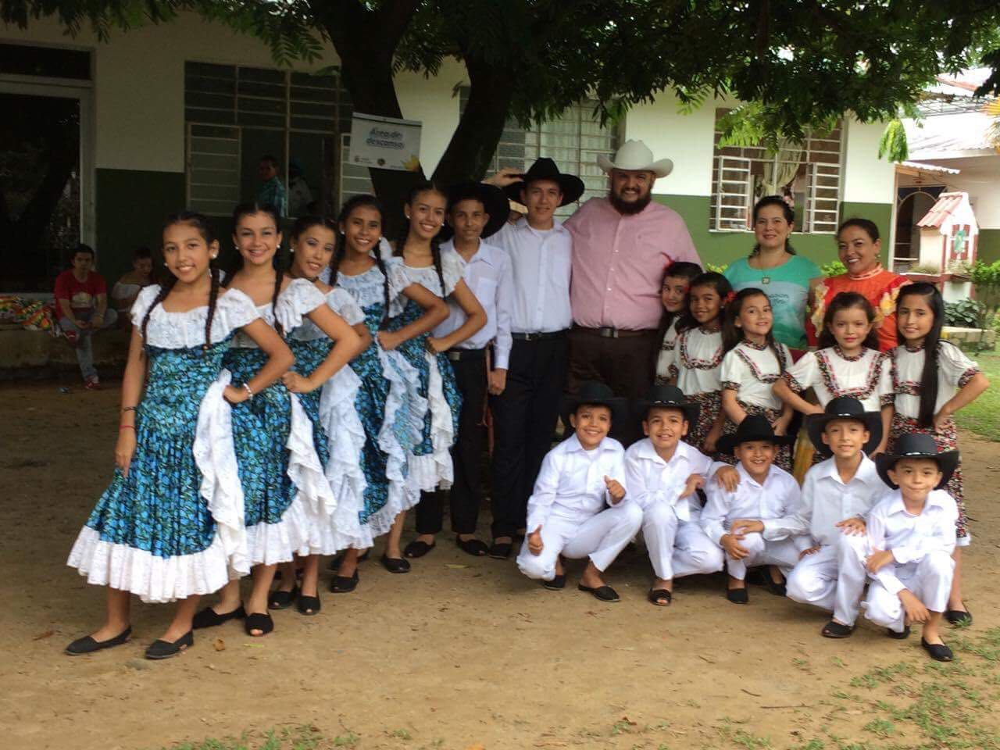
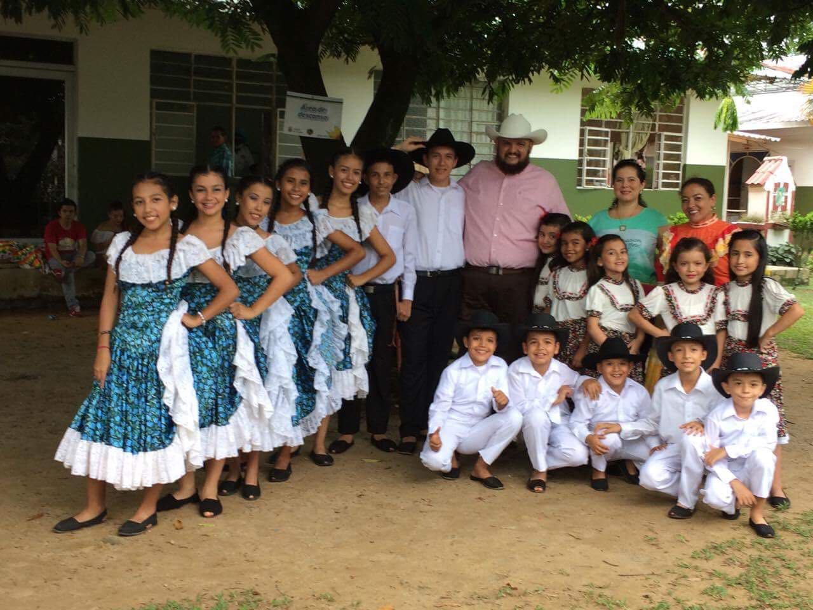

Este grupo está conformado por niños y niñas de 4 a 12 años, que desde pequeños se interesaron por la danza y el folclor, esto pequeños han logrado ganar muchos premio a nivel nacional, ellos demuestran de que están hechos, su amor y pasión por el baile. Esto chiquitines ya profesionales por su nivel de talento han logrado salir adelante dejando en alto el nombre de nuestro municipio.
Este grupo está conformado por jóvenes talentosos apasionados por el folclor colombiano, llevan un proceso de formación que gracias a su director MAURICIO GOMES PACHECO y sus instructores TATIANA PÉREZ Y CAMILO SÁNCHEZ y la disciplina de estos chicos han hecho de este un buen grupo que día a día crece profesional mente. Este grupo ah participado en el concurso de comparsas en el municipio de Chipaque, que con gran dedicación lograron obtener el 1° puesto.
 

Este grupo está conformado por jóvenes y adultos con gran experiencia en la danza. Su profesionalismo los ha llevado a obtener diversos premios en tod el ámbito cultural, han recorrido Colombia demostrando su gran talento y amor por el folclor. Este grupo ah sido muchas veces campeón, y sabemos que lo seguirá siendo por mucho tiempo, porque son jóvenes que con disciplina se esmeran para alcanzar lo que día a día se proponen